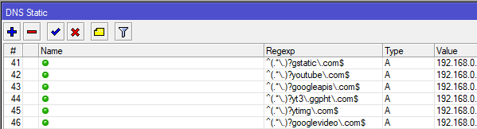

Всех приветствую.
На сколько мне известно, без контейнеров, микротики не умеют в клиента для VLESS+REALITY.
Собственно вопрос, пытался кто-то поднять рядом виртуальную машину (в локальной сети роутера), на которой бы был развернут этот клиент, который подключался бы к зарубежному VPS в роли сервера?
То есть флоу бы был примерно таким.
Запрос из локальной сети на заблокированный ресурс > Микротик > VM > VPS.
У меня Hap ax2, на котором маленький внутренний накопитель и нет USB, по этому контейнеры крутить не получается.
Кто может описать примерные шаги, которые необходимы, что бы заставить это работать?
Заранее благодарен.
Ну по идее на микротике в mangle маркируешь трафик любым удобным способом, потом через route направляешь его на виртуалку (она будет в качестве шлюза). Но это теория. Как в том анекдоте, рассказать я и сам могу, а ты сделай) Я пробовал сделать маркировку через tls host (то есть sni), mark routing, потом route до вм, где стоит zapret от bol-van’a. Но что-то не срослось. Трафик вроде маркируется, но виртуалка с запретом его жрать не хочет. видимо дополнительная настройка файрвола на самой вм нужна. Хотя по идее zapret в режиме tpws это прозрачный прокси. В общем, сам бы почитал, что в ответ на твой вопрос напишут более опытные админы.
У меня похожая проблема, может кто тоже что то подскажет. Ситуация такая, на микротике подняты туннели wg. К своим серверам за рубежом. Пока все работает, но чувствуется новый виток эскалации и не хочется потерять доступ к сети. Для этих целей рядом есть апельсинка, на ней стоит sing-box с vless, там же поднят еще один wg с пересылкой пакетов на sing-box. Все поднялось работает. А теперь затык. С телефона по wg все работает, хожу под vless. А вот с микрота туннель поднимается, но сайты не открываются. Есть подозрение, что проблема в mtu, но пока нет подтверждений. Может кто-то, что-то подскажет.
Для себя достаточно давно уже сделал такую конструкцию. Наиболее простым и управляемым вариантом оказалось ходить с некротика в xray клиент через wireguard(xray поддерживает входной WG, там только маршруты в самом xray криво работают. Фильтрация по входному тегу не канает, канает только последний маршрут в списке, не подошедший ко всем остальным правилам. Впрочем, на текущий момент могли уже что-то пофиксить).
Соотв. Заводим белые списки проксируемых адресов, манглом метим им роутинг и всё из этой таблицы заворачиваем в wireguard туннель, который смотрит в xray.
Если надо заворачивать по sni(как раз для случая с ютьюбом, у которого тысячи адресов локального кеша) - добавляем в mangle правило, которое как раз по sni делает add dst to address list. Можно временно(опять же копить адреса ютьюба толку ноль) Первый запрос при таком подходе улетит вхолостую, зато последующие заработают.
Ну и да, важно помнить что для работы ipv6 важно добавить правило
routing rule add action=lookup interface=интерфейс-локального-WG routing-mark=наша_метка table=наша_метка
Ну и таблицу создать не забыть
Отвечу на свой же вопрос. Разобрался все таки с этой вещью, что бы заработала цепочка микрот клиент wg- апельсинка сервер wg и она же клиент vless нужно на микроте через мангл сделать разбиение mtu. И все заработало. Только скорость конечно так себе, но как резерв пойдет.
У себя добавил подсетями через адрес лист с маркировкой трафика. Пробовал через raw с доменом, но как то выходит так себе, много айпишников набивает в адрес лист.
Так таймаут же. ИМХО 48 часов жизни этим адресам с головой. Сначала тоже подсетями хотел, начао сканить вариации найденных адресов, но то ли я немного не уловил логику, то ли какие-то не нашёл, но насканенные списки получились с явными дырками, а лишенего в vpn заворачивать тоже не хотелось
А что именно под разбиением MTU имеется ввиду?
Если fasttrack отключить в фаерволе микротика, что-то поменяется?
Fasttrak у меня отключен, низкая скорость была из за косяка в настройке на стороне апельсинки. Плюс с mtu был косяк
Часто встречающаяся проблема микротика. Более подробно по ссылке Таймауты при заходе на некоторые сайты через Wireguard : MikroTik там и есть что нужно прописать через консоль.
Купил таки себе AX3, попробовал припарковать контейнер с xray прямо в роутер. Работает очень даже бодро, лучше чем при завороте чем через малинку, меньше задержки, выше скорость. Схема заворота траффика осталась старой - Для каждого аутбаунда в конфиге xray заводится соответсвующий wireguard-inbound и через маршрутизацию мапятся 1к1, разница только в том что тут WG траффик вообще за пределы роутера не выходит. Ресурсов почти не жрёт, память что-то где-то 50Мб (±), процессор не больше 1.5% (суммарно для WG и container) скорее всего AC3 тоже справится, но не проверял. Сам конфиг можно готовить через 3x-ui, после чего с минимальными правками подкидывать на роутер. Короче если есть подходящее железо - прекрасный вариант.
А что по скоростям?
Сложно сказать, у меня что WAN 100мбит, что на VPS-ке тоже 100мбит. Ютуб у меня завёрнут через WARP внутри конфига Xray(потому что вот буквально вчера через нативный некротиковский клиент он подключаться отказался, а в xray работает. Загадочная загадка). В статистике воспроизведения видел цифры в районе 90мбит.
Трафиик через VLESS через импортный VPS проверить сложнее, но когда-то мерял что при прямом включении выдавало в районе тех же 90, а при завороте через малинку в районе 80Мбит. Сейчас что-то не получается нормально померять, VPS откочевал к другому ISP и я пока не понял куда точно.
Поправка, через некоторое время проц такие начинает поджирать, но в профайлере это поджирание вылезает в unclassified. Может конечно это и не контейнер, но вроде больше нечему. В любом случае, жрёт оно только одно ядро из четырёх, приемлимо.
Дядьки, напишите пожалуйста инструкцию как это все реализовать с нуля. Есть VPS сервер с 3x-ui и амнезией и, собственно, ax2. 5й день колупаюсь…
выкидывайте мемкротики и покупай те роутеры которыйе держут openwrt, routeroсъ пропиертарщина два года ждали пока виригуард туда подвезут с doh’ом, хотя вон тут чувак через коньтейнеры рилиализовывал, может можн прикрутить коньтэйнер с sign-box, xray or whatever, я самолично заказал себе такуйю вундервафлю посмотрим щто из етого выйдет
Пока на OpenWRT, OpenSense\PfSense не появится API, для меня смысла выкидывать нет.
Просто нужно устройство с USB и нормальным CPU. В итоге можно что угодно засунуть в контейнер.
ну так то да у меня на ac2 есть юэсби дырка, но чёт на микротеке ето то ещё колдунство мне ближе опенврт, ане вот ето всё
Я может подумаю о OpenWRT, когда будет стейбл версия под banana pi bpi-r4 с wifi 7 модулем.
Жду пока приедет rb5009, ax2 теперь будет просто точкой доступа.
В связи с тем, что форум воспрял из пепла - восстаналиваю мануал (Копия есть в комментах на хабре Решаем проблему блокировок (и YouTube) за 5 минут на роутере Mikrotik через контейнеры и без VPN / Хабр)
На микроте ставим пакет с контейнерами, ребутаемся, включаем контейнеры
/system/device-mode/update container=yes
На железке после этого нужно будет нажать кнопку mode за ограниченное время, удалённо включить контейнеры не выйдет, т.к. потанцевальная дыра в безопасности. Дальше создаём VETH для нашего контейнера, создаём отдельный бридж для контейнеров, навешиваем туда ip адреса(я тут добавляю и ipv6 и ipv4 адрес. На самом деле для схемы с роутингом через WG интерфейс достаточно только v4, но у меня все контейнеры настроены единообразно, так что для общего понимания оставлю)
/interface/veth/add address=172.20.0.2/24,fd08:172:20::2/64 gateway=172.20.0.1 gateway6=fd08:172:20::1 name=xray_eth
/interface/bridge/add name=containers
/interface/bridge/port/add bridge=containers interface=xray_eth
/ip/address/add address=172.20.0.1/24 interface=containers interface=xray_eth
/ip/firewall/nat/add action=masquerade chain=srcnat comment="from containers masq" out-interface-list=WAN src-address=172.20.0.0/24
/ipv6/address/add address=fd08:172:20::1 interface=containers
/ipv6/firewall/nat/
add action=masquerade chain=srcnat comment="from containers masq" out-interface-list=WAN src-address=fd08:172:20::/64
add action=masquerade chain=srcnat comment="to containers masq" out-interface=containers
/ipv6/firewall/filter/add action=accept chain=forward comment="Allow Containers" out-interface-list=WAN src-address=fd08:172:20::/64
Последние два правила если что рождены в попытке заставить работать схему с byeDPI, для xray это тоже не нужно(при условии что вы отправляете траффик на ipv4 адрес. Если у вас ipv6-only VPS - то нужно, всё нужно) Дальше втыкаем в микрот флешку, из интерфейса форматируем её в EXT4(Обязательно! Иначе при распаковке контейнера порушатся разрешения фалов и ничего не взлетит) Конфигурим местный докер
/container/config/set ram-high=384.0MiB registry-url=https://ghcr.io/ tmpdir=usb1/pull
Аттеншн! Тут ram-high=384.0MiB - это конфиг для AX3 с гигом оперативы. У AС3 её всего 256Мб и с пустым конфигом и установленным пакетом wifi-qcom доступно примерно 145Мб(а с подробным конфигом и под нагрузкой - что-то около 70Мб). У AC2(128Мб) при таких же вводных доступно и того меньше - всего примерно 30Мб. Для AC2 вероятно придётся вообще перейти на легаси Wifi драйвер, иначе с ресурсами ну совсем грустно. Соотв. выставляем параметр с запасом, так чтоб и самому роутеру хватило. При превышении лимита процессы в контейнере начнут нещадно троттлиться, т.е. работать будет, но с дикими тормозами. А вот если память у роутера закончится - скорее всего он тупо крашнется. Не доводим и не включаем старт контейнера при загрузке пока не отладим всё. Скачиваем образ
/container/add comment=xray-core remote-image=xtls/xray-core:main interface=veth1 root-dir=usb1/xray/store
После этого можно попробовать его стартануть и убедиться что всё найс и ничего не сыпется. Дальше нужно приготовить конфигу xray (файлик config.json) Либо выдёргиваем его из /usr/local/x-ui/bin/config.json (не с сервера разумеется, а с заранее где-то настроенной клиентской инсталляции x-ui. В самом конфиге придётся поправить ip-шники при этом, очевидно), либо пишем ручками. Должно получиться что-то такое
{
"log": {
"access": "none",
"dnsLog": false,
"error": "./error.log",
"loglevel": "error"
},
"routing": {
"domainStrategy": "AsIs",
"rules": [
{
"type": "field",
"inboundTag": [
"api"
],
"outboundTag": "api"
},
{
"type": "field",
"ip": [
"geoip:private",
"192.168.88.0/24"
],
"outboundTag": "direct"
},
{
"type": "field",
"ip": [
"geoip:ru"
],
"outboundTag": "warp"
},
{
"type": "field",
"protocol": [
"bittorrent"
],
"outboundTag": "direct"
},
{
"type": "field",
"inboundTag": [
"inbound-172.20.0.2:3125"
],
"outboundTag": "warp"
},
{
"type": "field",
"inboundTag": [
"inbound-172.20.0.2:3126"
],
"outboundTag": "VLESS-VPS"
}
]
},
"dns": null,
"inbounds": [
{
"listen": "172.20.0.2",
"port": 3126,
"protocol": "wireguard",
"settings": {
"mtu": 1420,
"secretKey": "секрет",
"peers": [
{
"privateKey": "секрет",
"publicKey": "секрет",
"preSharedKey": "секрет",
"allowedIPs": [
"0.0.0.0/0",
"::/0"
],
"keepAlive": 0
}
],
"kernelMode": false
},
"streamSettings": null,
"tag": "inbound-172.20.0.2:3126",
"sniffing": {
"enabled": false,
"destOverride": [
"http",
"tls",
"quic",
"fakedns"
],
"metadataOnly": false,
"routeOnly": false
}
},
{
"listen": "172.20.0.2",
"port": 3125,
"protocol": "wireguard",
"settings": {
"mtu": 1420,
"secretKey": "секрет",
"peers": [
{
"privateKey": "секрет",
"publicKey": "секрет",
"allowedIPs": [
"0.0.0.0/0",
"::/0"
],
"keepAlive": 0
}
],
"kernelMode": false
},
"streamSettings": null,
"tag": "inbound-172.20.0.2:3125",
"sniffing": {
"enabled": false,
"destOverride": [
"http",
"tls",
"quic",
"fakedns"
],
"metadataOnly": false,
"routeOnly": false
}
}
],
"outbounds": [
{
"tag": "direct",
"protocol": "freedom",
"settings": {
"domainStrategy": "AsIs"
}
},
{
"tag": "blocked",
"protocol": "blackhole",
"settings": {}
},
{
"tag": "VLESS-VPS",
"protocol": "vless",
"settings": {
"vnext": [
{
"address": "секрет",
"port": 443,
"users": [
{
"id": "секрет",
"flow": "xtls-rprx-vision",
"encryption": "none"
}
]
}
]
},
"streamSettings": {
"network": "tcp",
"security": "reality",
"realitySettings": {
"publicKey": "секрет",
"fingerprint": "chrome",
"serverName": "популярный.хост.близко.к.VPS",
"shortId": "секрет",
"spiderX": "/"
},
"tcpSettings": {
"header": {
"type": "none"
}
}
}
},
{
"tag": "warp",
"protocol": "wireguard",
"settings": {
"mtu": 1420,
"secretKey": "секрет",
"address": [
"172.16.0.2/32",
"секрет"
],
"workers": 2,
"domainStrategy": "ForceIP",
"reserved": [
166,
231,
19
],
"peers": [
{
"publicKey": "секрет",
"allowedIPs": [
"0.0.0.0/0",
"::/0"
],
"endpoint": "список известных хостов и портов есть в сети. Подберите тот, что будет работать для вас",
"keepAlive": 0
}
],
"kernelMode": false
}
}
],
"transport": null,
"policy": {
"levels": {
"0": {
"statsUserDownlink": true,
"statsUserUplink": true
}
},
"system": {
"statsInboundDownlink": true,
"statsInboundUplink": true,
"statsOutboundDownlink": true,
"statsOutboundUplink": true
}
},
"api": {
"tag": "api",
"services": [
"HandlerService",
"LoggerService",
"StatsService"
]
},
"stats": {},
"reverse": null,
"fakedns": null,
"observatory": null,
"burstObservatory": null
}
Тут у меня конфига на два входа и к ним два выхода - в WARP и в свой VLESS VPN Подкидываем эту конфигу на флешку по пути /usb1/xray/ Добавляем маунт поинт и привязываем его к контейнеру
/container/mounts/add dst=/etc/xray/config.json name=xray_config src=/usb1/xray/config.json
/container/set mounts=xray_config [ /container/find comment=xray-core ]
После чего можно рестартовать контейнер.
В общем случае вам нужны две ключевые пары из публичного и приватного ключа. Генерятся они любым удобным способом, главное чтоб публичная часть ключа соответствовала приватной. По конфигам раскалдываются каким-то таким образом
{
"listen": "172.20.0.2",
"port": 3125,
"protocol": "wireguard",
"settings": {
"mtu": 1420,
"secretKey": "PrivkeyB",
"peers": [
{
"privateKey": "PrivkeyA",
"publicKey": "PubkeyA",
"allowedIPs": [
"0.0.0.0/0",
"::/0"
],
"keepAlive": 0
}
],
"kernelMode": false
},
"streamSettings": null,
"tag": "inbound-172.20.0.2:3125",
"sniffing": {
"enabled": false,
"destOverride": [
"http",
"tls",
"quic",
"fakedns"
],
"metadataOnly": false,
"routeOnly": false
}
}
/interface/wireguard/print
Flags: X - disabled; R - running
4 R name="WARP-WG" mtu=1420 listen-port=13234 private-key="PrivkeyA"
public-key="PubkeyA"
/interface wireguard peers
add allowed-address=0.0.0.0/0,::/0 endpoint-address=172.20.0.2 endpoint-port=3125 interface=WARP-WG name=peer5 public-key=\
"PubkeyB"
При этом на самом деле PrivkeyA в конфиге сервера по большому счёту не должен быть нужен, не знаю зачем он его хранит - может это последствия генерации конфига через x-ui.
Для маршрутизации траффика до контейнера нам вполне достаточно динамических маршрутов, которые автоматически будут созданы в момент создания бриджа.
ip/route/print where gateway="containers"
Flags: D - DYNAMIC; A - ACTIVE; c - CONNECT
Columns: DST-ADDRESS, GATEWAY, DISTANCE
DST-ADDRESS GATEWAY DISTANCE
DAc 172.20.0.0/24 containers 0
ipv6/route/print where gateway="containers"
Flags: D - DYNAMIC; X - DISABLED, I - INACTIVE, A - ACTIVE; c - CONNECT, s - STATIC
Columns: DST-ADDRESS, GATEWAY, DISTANCE
# DST-ADDRESS GATEWAY DISTANCE
DAc fd08:172:20::/64 containers 0
DAc fe80::%containers/64 containers 0
Ну а дальше мы просто создаём WG интерфейсы и пиры для каждого inbound в контейнере
/interface wireguard
add listen-port=13233 mtu=1420 name=VLESS-WG private-key="секрет"
add listen-port=13234 mtu=1420 name=WARP-WG private-key="секрет"
/interface wireguard peers
add allowed-address=0.0.0.0/0,::/0 endpoint-address=172.20.0.2 endpoint-port=3126 interface=VLESS-WG name=peer4 public-key="секрет"
add allowed-address=0.0.0.0/0,::/0 endpoint-address=172.20.0.2 endpoint-port=3125 interface=WARP-WG name=peer5 public-key="секрет"
создаём таблицы маршрутизации
/routing table
add disabled=no fib name=vless
add disabled=no fib name=warp
Добавляем dummy lookup rule (возможно в актуальных версиях ROS уже не нужно, раньше без этого ipv6 маршрутизация не работала)
/routing rule
add action=lookup disabled=no interface=WARP-WG routing-mark=warp table=warp
add action=lookup disabled=no interface=VLESS-WG routing-mark=vless table=vless
Добавляем маскарадинг
/ip firewall nat
add action=masquerade chain=srcnat comment="WARP-WG masq" out-interface=WARP-WG
add action=masquerade chain=srcnat comment="VLESS-WG masq" out-interface=VLESS-WG
/ipv6 firewall nat
add action=masquerade chain=srcnat comment="WARP-WG masq" out-interface=WARP-WG
add action=masquerade chain=srcnat comment="VLESS-WG masq" out-interface=VLESS-WG
Дальше нам нужно повесить на интерфейсы WG какие-нибудь IP адреса, любые, из приватного диапазона(по ним будет идти маршрутизация только до приложения в контейнере). Например так. Опять же, в целом можно без этого, т.к. маршрутизировать мы будет тупо по интерфейсу, но некрасиво.
/ip address
add address=172.19.0.2 interface=WARP-WG network=172.19.0.2
add address=172.19.0.3 interface=VLESS-WG network=172.19.0.3
/ipv6 address
add address=fd08:172:19::3/128 advertise=no interface=VLESS-WG no-dad=yes
add address=fd08:172:19::2/128 advertise=no interface=WARP-WG no-dad=yes
Наконец добавляем правила, по которым траффик будет заворачиваться в соотв. таблицу маршрутизации
/ip firewall mangle
add action=mark-routing chain=prerouting comment=VLESS dst-address-list=vless new-routing-mark=vless passthrough=yes routing-mark=!vless
add action=mark-routing chain=prerouting comment=WARP dst-address-list=warp new-routing-mark=warp passthrough=yes routing-mark=!warp
/ipv6 firewall mangle
add action=mark-routing chain=prerouting comment=VLESS dst-address-list=vless new-routing-mark=vless passthrough=yes routing-mark=!vless
add action=mark-routing chain=prerouting comment=WARP dst-address-list=warp new-routing-mark=warp passthrough=yes routing-mark=!warp
Здесь мы отправляем всё, что будет в соотв. адрес листе в соотв. ему таблицу маршрутизации. Если нужно заворачивать несколько адрес листов в один интерфейс или как-то более гибко рулить всем этим безобразием - можно добавить свои цепочки и делать в них jump. Напр. как-то так:
/ipv6 firewall mangle
add action=mark-connection chain=prerouting_warp comment="WARP_chain" dst-address-list=!vpnexclude new-connection-mark=warp
add action=mark-routing chain=prerouting_warp comment="WARP_chain" dst-address-list=!vpnexclude new-routing-mark=warp passthrough=yes
add action=jump chain=prerouting comment=WARP dst-address-list=youtube jump-target=prerouting_warp routing-mark=!warp
add action=jump chain=prerouting comment=WARP dst-address-list=facebook jump-target=prerouting_warp routing-mark=!warp
В этом примере я создал для ipv6 отдельную цепочку prerouting_warp, в которой заворачиваю траффик в таблицу warp и помечаю соединение(можно собрать любое количество нужных правил). При этом проверяю, что коннект не идёт на адреса из списка, подключение до которых ни в коем случае не должно происходить через VPN - в качестве защиты от своих кривых рук. Ну и дальше двумя правилами закидываю в эту цепочку траффик для адресс листов youtube и facebook. Можно так, можно как в предыдущем примере - в зависимости от подхода и решаемой задачи. Как больше нравится и как удобнее.
Ну и вишенкой на торте - создаём маршруты в дикий интернет для наших новых таблиц маршрутизации
/ip route
add comment=WARP disabled=no distance=1 dst-address=0.0.0.0/0 gateway=WARP-WG routing-table=warp
add comment=VLESS disabled=no distance=1 dst-address=0.0.0.0/0 gateway=VLESS-WG routing-table=vless
/ipv6 route
add comment=WARP disabled=no distance=1 dst-address=2000::/3 gateway=WARP-WG routing-table=warp
add comment=VLESS disabled=no distance=1 dst-address=2000::/3 gateway=VLESS-WG routing-table=vless
Настроил тоже пару схем через контейнеры, по инструкции с хабра.
Первая, byedpi+tun2socks. Столкнулся с проблемой на tun2socks, ютуб не заработал. Хотя в tcpdump пакеты уходили и возвращались обратно. Попробовал эту же связку настроить на железке с линуксом, без докера, тоже самое.
Скорее всего проблема из-за двух дефолтных маршрутов. Переписал маршрутизацию так:
Спойлер
ip route del default # удаляем дефолт
ip route add default via 198.18.0.1 dev tun0 metric 1 # добавляем дефолт через tun интерфейс
ip route add 10.0.0.0/24 via 10.0.1.1 dev eth0 # маршрут в локальную сеть
ip route add 10.0.1.0/24 via 10.0.1.1 dev eth0 # connected маршрут в сеть контейнеров
С такими маршрутами ютуб заработал. Показывает 4k без фризов. На роутере настрен мангл с адресами googlevideo, и со всех устройств в локальной сети трафик прозрачно заворачивается в контейнер, как в инструкции с хабра.
Единственная странность, через curl ютуб не грузит. Если в curl добавить прокси, и указать адрес контейнера byedpi, то работает, а через tun2socks нет.
Вторая схема, xray+tun2socks. Официального образа под мою архитектуру нет, взял teddysun/xray, он указан на гитхаб странице Xray-core. Настройка не сложная, в файл /etc/xray/config.json вставляете конфиг клиента и стартуете контейнер. Я конфиг экспортировал из клиента v2rayNG, удалив лишнее.
На роутере таким же образом мангл с проксируемыми адресами прозрачно для всех устройств заворачиваются через интерфейс tun2socks.
И вот здесь уже вонзикла проблема, speedtest показывает скорость загрузки до 10 Мбит, что очень мало. С самим xray проблем нет, через v2rayNG загрузка 30-40Мбит (ограничение wifi).
Пока не могу разобраться в чем проблема. Может из-за медленного tun2socks, но с ютубом проблем нет. Есть еще hev-socks5-tunnel, судя по описанию, более производительный, но в докере нет под мою архитектуру, а на линуксе не удалось завести, на этапе настройки ip rule падает сеть на устройстве.
Wireguard пока не рассматриваю, т.к. хочется иметь однотипные схемы.
очень сложна, проще перешить в openwrt или выкинуть и купить перешиваемое в openwrt…
Добрый день. Специально зарегистрировался, чтобы добавить ответ. Прежде всего спасибо Вам за проделанную работу и инструкцию. Думаю кто в теме по достоинству это оценит. Я к сожалению, не понял как это реализовать на микротике, какие данные и где мне поменять под себя, как отделить трафик на запрещенные ресурсы и разрешенные. Буду Вам признателен за более подробную инструкцию с картинками (или видео). Представьте, что у Вас есть комп с Windows , настроенный в облаке сервер с VLESS и микротик и вам нужно настроить микротик с нуля до запуска. Представьте на месте себя человека который из настройки оборудования знает: “Вставляем эту команду в это окно…” “В этом окне выставляем эти параметры…” “Данные берём из этого окна…” “Жмём далее…” . Понимаю, что до такой степени это тяжело “разжёвывать”, но тогда эта информация станет полезна и востребована широкому кругу обычных пользователей и благодарность за Ваш труд будет несоизмерима выше.
Добрый день! К сожалению, у меня нет ни сил, ни желания, ни инструментов для создания видеоинструкции. Да и не очень понятно, что именно в ней нужно отражать, т.к. все команды просто прописываются терминале с поправкой на текущий конфиг. На мой личный вкус - всё и так достаточно сильно разжёвано до уровня, которым обладает почти каждый владелец микротиков. Гораздо проще будет, если вы будете просто задавать вопросы по тем пунктам, которые не понятны и тогда возможно я смогу что-то дополнительно пояснить.
Привет!
Подскажите, пожалуйста, какой способ сейчас работает под hap lite ac, архитектура mipsbe?
Месяц как взял микротик, не думал, что будут проблемы с обходом блокировок в нем
Здравствуйте.
Пытаюсь повторить на RB1100x4 и получаю ошибку “no manifest found for this architecture”. Что делаю не так?
Архитектура ARM 32bit, попробуйте установить teddysun/xray с докерхаба.
Но у RB1100x4 вроде нет возможности подцепить внешний диск, 128 МБ не хватит.
Можно в RAM поставить, но это нужно аккуратно )
https://www.youtube.com/watch?v=KO9wbarVPOk
Поддержка контейнеров ЕМНИП есть только под arm. Но даже если есть под mips - у hap ac lite всего 64мб памяти. Впихнуьь туда что-то кроме самой ROS звучит как нереальная задача, вам проще всего докупить какой-нибудь одноплатник и развернуться на нём
Спасибо, была идея поставить на рос. VPS какой-нибудь VPN + обход DPI.
Но проблема в том, что многие VPN-протоколы, поддерживаемые микротиком, заблокированы. А с какими-то не получилось.
Я не силен в сетях.
Сейчас уже думаю поставить OpenWRT
Здравствуйте.
Спасибо за ответ. У RB1100x4 есть слот под microSD, его использую.
К сожалению, а не понял всю схему, у вас wg используется для подключения к контейнеру. У меня такого в конфиге нет. Не пойму как реализовать. Вот мой конфиг:
{kind=link}
С xray не помогу, я только подсказал по вопросу ошибки с архитектурой проца.
Не покупайте микротики. Цена на них необоснованно завышена всегда была. Ну а если взяли или как у меня был в наличии, то берите одноплатник и разворачивайте на нем всю инфраструктуру (sing-box, adguard home что бы использовать нормально doh, потому что в микротике работает doh отвратительно, ну как минимум на версии 7.9) тогда будет работать нормально. Если выбор стоит перед покупкой то лучше что то, что можно перешить на openwrt.
Лично мне микротики нравятся, но не по текущей цене, но они всегда тормозят с новыми технологиями.
Одноплатник есть, только не пойму как завернуть через него трафик для заблокированных сетей.
Может у вас есть опыт построения схемы микротик + одноплатник с впн?
Опыт есть, потому что я тоже счастливый обладатель микротика). Я вроде писал, но наверное как форум слетел, сообщение не восстановилось.
У меня схема построена так. На своем vps поднят vless через панель 3x-ui. На Оранж пи установлен WireGuard и sing-box. Sind-box поднимает прокси к серверу и tun0 интерфейс. WireGuard используется для связки микротика с Оранж пи. Весь трафик с WireGuard заворачивается в sing-box. На самом микротике поднят WireGuard на орандж пи и адрес листы для выборочной маршрутизации в vpn. Как то это вот так работает, чукча не писатель)) если есть вопросы пишите в лс
Не пробовали замерять скорость напрямую через sing-box и через wireguard+sing-box? Интересно, на сколько больше накладных расходов с wireguard.
Я делал проще, отдельную тачку вынес в отдельную сеть в другой бридж
Нет, замерять не пробовал, меня в принципе все устраивает, т.к. видео грузятся без затыков, сайты тоже. Попробую на досуге померить.
В продолжении моего сообщения выше.
Поднял в контейнере микротика hev-socks5-tunnel
Скорость через xray(vless+reality) стала 25-30Мбит/с.
Через tun2socks была в районе 10Мбит/с
Прогресс есть, но это все-равно мало по сравнению с wg+udp2raw, 85-90Мбит/с
Еще заметил ютюб стал быстрее воспроизводить видео, почти без задержек в начале, в связке byedpi+hev-socks5-tunnel.
Благодарю за инструкцию и интересный подход без использования tun2socks. Если есть возможность, расскажите подробнее про создание ключей WG и какой где добавлять в конфиг.
Пробую поднять с одним пиром только для vless без warp но никак не могу разобраться какие ключи куда писать в конфиге. по логике из инструкции с одним инбондом должно хватить одной пары ключей, но в примере используется две. вот в этом месте:
{
"listen": "172.20.0.2",
"port": 3125,
"protocol": "wireguard",
"settings": {
"mtu": 1420,
"secretKey": "PrivkeyB",
"peers": [
{
"privateKey": "PrivkeyA",
"publicKey": "PubkeyA",
"allowedIPs": [
"0.0.0.0/0",
"::/0"
],
"keepAlive": 0
}
],
Но тогда опять же, по логике для двух инбондов должно быть 4 пары ключей, а не две как в инструкции. Или может я чего то не понимаю.
хотелось бы более подробные комментарии)
У вас две пары ключей(закрытый/открытый). Одна пара для WG интерфейса на роутере, другая - от WG интерфейса в контейнере. Ключевые пары можно генерить самим микротом(или чем угодно что умеет генерить конфигу вайргарда). В данном случае в конфиге микрота будет ключевая пара A в WG интерфейсе, а в пирах - PubkeyB. Но вообще очедно что где какая - неважно, они абсолютно равноценны, главное помнить, что они кладутсч крест-накрест(закрытая часть ключа на “своей” стороне в интерфейса, открытая - на той стороне в пирах и наоборот)
Все привет! Арендую vds через marzban за рубежом. Настроен только vless. На ПК и андроид через соответствующие приложения всё работает четко! Очень хочу реализовать данный впн на микроте. Есть микрот. хап ac2. Планирую поменять на хап AX3. По Вашей инструкции не понял, где взять конфиг config.json. Путь /usr/local/x-ui/bin/config.json это где именно находится? На каком то уже настроенном клиенте? Много туманного в настройке через докер)
Я просто предложил развернуть где-нибудь инсталляцию 3x-ui, настроить всё там через ГУЙ, стянуть конфигу отуда и чуть-чуть её подправить. Ну типа вместо того чтоб руками всё писать.
Благодарю за разъяснения, удалось поднять.
так же воспользовался 3x-ui для генерации конфига. все прекрасно работает 
смогли победить?
Добавляете вот такой инбаунд:
{
"tag": "wireguard",
"listen": "0.0.0.0",
"port": СЮДА_ПОРТ_СЕРВЕРА,
"protocol": "wireguard",
"settings": {
"secretKey": "СЮДА_ПРИВАТНЫЙ_КЛЮЧ_СЕРВЕРА",
"peers": [
{
"publicKey": "СЮДА_ПУБЛИЧНЫЙ_КЛЮЧ_КЛИЕНТА",
"allowedIPs": [
"192.168.8.2/32"
]
}
],
"kernelMode": false
}
},
С таким инбаундом XRay становится wireguard сервером, соответственно можно несколько пиров добавить в блок peers по аналогии, первый пир - сам микротик по идее, соответственно микротик настраиваете как клиента WG
С ключами надеюсь не запутаетесь, если что пишите
Чуть не забыл, в routing rules добавляете
{
"inboundTag": [
"wireguard"
],
"network": "udp",
"outboundTag": "proxy",
"port": "СЮДА_ПОРТ_СЕРВЕРА",
"source": [
"192.168.0.0/16",
"10.0.0.0/8",
"172.16.0.0/12"
],
"type": "field"
},
соответственно эта часть конфига отвечает за то, что всё что пришло в Wireguard inbound уйдёт в “proxy” outbound, слушаем мы WG только из подсетей описанных в source
UPD2: У вас кстати почему то TAG outbound не проставлен, так что правило роутинга не сработает, по этому допишите в самый конец перед закрывающей скобкой блока с VLESS (между жёлтой и синей скобкой)
"tag": "proxy"
нет никакого смысла с поднятым Xray/sing-box грузить бедный микрот задачей набивать адрес листы, тем более что работает реально хреново, гораздо проще в случае с Xray добавить inbound’ы по аналогии с этой инструкцией но вместо MaraDNS исользовать самого микрота, добавляя записи заблокированных ресурсов в DNS static на IP с Xray, и всё. Всё что угодно в вебе так можно разбанить на уровне всей сети миротика

Этот подход вырабатывался ещё на тех версиях ROS, когда FWD записи не работали с включённым DOH. Сейчас тоже перешёл на вариант с DNS
Схема с использованием ВМ с клиентом показалась мне рабочей, с учетем нехватки ресурсов на ac hap2, и реализовал ее - ру сегмент интернета напрямую, зарубежный через VPS. Только пока работает только через браузер, и все летает, указав прокси клиента xray. Но хочется, чтобы все работало через Mikrotik. Для этого нужно завернуть трафик на ВМ, что не получается сделать, т.к. не шарю в микроте. В идеале хотелось бы заворачивать только заблокированные ресурсы, используя antifilter. Может у кого-то уже есть такие настройки или знает как сделать?
По текущей теме это xray vless + hev-socks5-tunnel в одном контейнере!
wiktorbgu/vless-hev-socks5-tunnel-mikrotik
Если нужна какая-то кастомизация, пишите)
Полезные контейнеры для Mikrotik
Решил собрать в одном сообщении
https://hub.docker.com/u/wiktorbgu
—————————————————————————
AmneziaWG client and server on Mikrotik container
wiktorbgu/amneziawg-mikrotik
———————————————————————
xray vless + hev-socks5-tunnel in one container!
wiktorbgu/vless-hev-socks5-tunnel-mikrotik
—————————————————————————
ByeDPI + hev-socks5-tunnel in one container! < 4Mb
wiktorbgu/byedpi-hev-socks5-tunnel:mikro
————————————————————
Mikro container hev socks tunnel! <3Mb
wiktorbgu/hev-socks5-tunnel-mikrotik
————————————————
Mikro container ByeDPI! <100kb
wiktorbgu/byedpi-mikrotik
Микротик hap ac2 со 128Mb памяти потянет контейнер совместно с vless? Здесь писали, что xray-core нужно куда больше оперативы.
Запустился на микротике, норм. Опять же, используя как прокси из браузера норм работает. Как в него завернуть трафик из роутера?
Добавил микро версию на 10Мб меньше, дальше ужиматься некуда
xray vless + hev-socks5-tunnel in one container! 48Mb
wiktorbgu/vless-hev-socks5-tunnel-mikrotik:mikro
Заворачивается как обычно через таблицу
/routing table
add disabled=no fib name=vless
/ip route
add comment=VLESS disabled=no distance=1 dst-address=0.0.0.0/0 gateway=VLESS routing-table=vless
По аналогии с инструкцией можете посмотреть как заворачивать нужные ресурсы в таблицу (ссылки тут в описании https://hub.docker.com/r/wiktorbgu/byedpi-hev-socks5-tunnel)
Все прекрасно работает, спасибо
Можно выкинуть hev-socks5 и подключаться через Wireguard
а смысл?
Удобно, нет проблем с ipv6 маршрутизацией, получаем отдельный интерфейс вместо общего бриджа для всех контейнеров(что позволяет без лишнего головняка например делать марк коннекшн), можно ещё немного порезать образ, нет дополнительного процесса в памяти. Работает очень шустро и стабильно, т.к. wg на некротиках реализован модулем ядра, я этим способом чёрти сколько пользуюсь, с момента когда в xray появилась поддержка wireguard inbound. Ну и вишенкой на торте - можно сделать несколько независимых аутбаунд коннектов, к ним 1к1 сконфигурить wireguard инбаунды и вся эта красота будет реализовываться одним контейнером. В схеме с tun2sock проксёй так не получится.
Со всем тем что описано и с ipv6 да, логично оно и нужно для этого. А большинству нужно просто и быстро подключиться к vless серверу поэтому мой контейнер самый простой в настройке. Данные в env вбил, маршрут в контейнер направил и всё работает. Всяко лучше же чем соединяют по 2 контейнера.
Спрос рождает предложение, поэтому и собрал. Мне до сих пор простого wg хватает, я vless не использую, но потестить и чет собрать полезное интересно)
Спасибо за описание схемы, подробно и понятно, приятно было читать.
В таком ключе да, но я из ваших постов предположил, что стояла задача сэкономить каждый байт, чтобы оно нормально крутилось даже на AC2. Потому и предложил)
у меня ax3, а уменьшение образов тупо спортивный интерес))
а пользую я на все byedpi и на пару тройку сайтов бесплатные wg warp и proton)
сразу скажу, команды байдпи я не подбираю каждый день как некоторые думают  , раз поставил и забыл даже инста работает через него
, раз поставил и забыл даже инста работает через него
Спасибо! Поставил на ax3, отлично работает.
Да у меня тоже AX3, но это же не значит что не нужно пытаться оптимизировать) Ваш вариант контейнера bdpi 2в1 работает лучше двух отдельных, проверил. Почему-то при двух отдельных контейнерах была проблема с долгим первым хендшейком, возможно ipv6 маршрутизация чудила. Тут этой проблемы нет
З.Ы. на всякий случай entrypiont.sh с ipv6
#!/bin/sh
TUN="${TUN:-tun0}"
MTU="${MTU:-9000}"
IPV4="${IPV4:-198.18.0.1}"
IPV6="${IPV6:-fd08:198:18::1}"
MARK="${MARK:-438}"
SOCKS5_UDP_MODE="${SOCKS5_UDP_MODE:-udp}"
OTHER_ROUTE="${OTHER_ROUTE:-}"
LOG_LEVEL="${LOG_LEVEL:-warn}"
config_file() {
cat > /hs5t.yml << EOF
misc:
log-level: '${LOG_LEVEL}'
tunnel:
name: '${TUN}'
mtu: ${MTU}
ipv4: '${IPV4}'
ipv6: '${IPV6}'
post-up-script: '/route.sh'
socks5:
address: '127.0.0.1'
port: 1080
udp: '${SOCKS5_UDP_MODE}'
mark: ${MARK}
EOF
}
config_route() {
echo "#!/bin/sh" > /route.sh
chmod +x /route.sh
echo "sysctl -w net.ipv6.conf.all.forwarding=1" >> /route.sh
echo "ip rule add from all uidrange 1000-1000 lookup 110 pref 28000" >> /route.sh
echo "ip -6 rule add from all uidrange 1000-1000 lookup 110 pref 28000" >> /route.sh
echo "ip route flush table 110" >> /route.sh
echo "ip -6 route flush table 110" >> /route.sh
echo "ip route add default via $(ip route | awk '/default/ && /eth0/ {print $3}') dev eth0 metric 50 table 110" >> /route.sh
echo "ip -6 route add 2000::/3 via $(ip -6 route | awk '/default/ && /eth0/ {print $3}') dev eth0 metric 50 table 110" >> /route.sh
echo "ip route del default" >> /route.sh
echo "ip -6 route del default" >> /route.sh
echo "ip route add default via ${IPV4} dev ${TUN} metric 1" >> /route.sh
echo "ip -6 route add 2000::/3 dev ${TUN} metric 1" >> /route.sh
echo "ip route add default via $(ip route | awk '/default/ && /eth0/ {print $3}') dev eth0 metric 10" >> /route.sh
echo "ip -6 route add 2000::/3 via $(ip -6 route | awk '/default/ && /eth0/ {print $3}') dev eth0 metric 10" >> /route.sh
# exclude local network
echo "ip route add 10.0.0.0/8 via $(ip route | awk '/default/ && /eth0/ {print $3}') dev eth0" >> /route.sh
echo "ip route add 172.16.0.0/12 via $(ip route | awk '/default/ && /eth0/ {print $3}') dev eth0" >> /route.sh
echo "ip route add 192.168.0.0/16 via $(ip route | awk '/default/ && /eth0/ {print $3}') dev eth0" >> /route.sh
echo "${OTHER_ROUTE}" >> /route.sh
}
run() {
config_file
config_route
echo "echo 1 > /success" >> /route.sh
hev-socks5-tunnel /hs5t.yml &
su - ciadpi -c "ciadpi $*"
}
run "$@" || exit 1
Ну и до кучи пусть будет конфига амнезии с ipv6
Тут соотв 172.21.0.1 и fd08:172:21::1 - адреса бриджа, к которому подключен контейнер
[Interface]
PrivateKey = Секрет
S1 = 0
S2 = 0
Jc = 4
Jmin = 40
Jmax = 70
H1 = 1
H2 = 2
H3 = 3
H4 = 4
# Add IP masquerading
PostUp = iptables -t nat -A POSTROUTING -o %i -j MASQUERADE
PostUp = ip6tables-legacy -t nat -A POSTROUTING -o %i -j MASQUERADE
# Del IP masquerading
PostDown = iptables -t nat -D POSTROUTING -o %i -j MASQUERADE
PostDown = ip6tables-legacy -t nat -D POSTROUTING -o %i -j MASQUERADE
# exclude local networks
PreUp = ip route add 10.0.0.0/8 via 172.21.0.1 dev eth0
PreUp = ip route add 172.16.0.0/12 via 172.21.0.1 dev eth0
PreUp = ip route add 192.168.0.0/16 via 172.21.0.1 dev eth0
#IPV6 packet forwarding
PreUp = sysctl -w net.ipv6.conf.all.forwarding=1
# Here is the IP of the Endpoint
PreUp = echo '162.159.192.1 engage.cloudflareclient.com' >> /etc/hosts
PreUp = echo '2606:4700:d0::a29f:c001 engage.cloudflareclient.com' >> /etc/hosts
PreUp = ip route add 162.159.192.1 via 172.21.0.1 dev eth0
PreUp = ip -6 route add 2606:4700:d0::a29f:c001 via fd08:172:21::1 dev eth0
PreDown = ip -6 route del 2606:4700:d0::a29f:c001 via fd08:172:21::1 dev eth0
MTU = 1280
Address = 172.16.0.2, Секрет(уникальный ipv6 адрес)
DNS = 1.1.1.1, 2606:4700:4700::1111, 1.0.0.1, 2606:4700:4700::1001
[Peer]
PublicKey = Секрет
AllowedIPs = 0.0.0.0/1, 128.0.0.0/1, 2000::/3
#AllowedIPs = 0.0.0.0/0, ::/0
#privileged: true
PersistentKeepalive = 25
Endpoint = engage.cloudflareclient.com:2408
И что-то amnesia-wg на некротике вчера ночью сдохла. Насмерть. Не работает ни через через ipv6, ни через ipv4 эндпоинты. На телефоне при этом подключается. Перебор Jc, Jmin, Jmax тоже особо не спасает. РТК Москва
Нашёл совершенно прекрасный вариант amnesia-wg
Одинокий бинарь, который поднимает socks proxy и коннектится к подложенному конфигу. Аналогично bdpi вообще ни от чего не зависит, можно собрать в контейнер, содержащий только его
Сборочный скрипт:
#!/bin/bash
DISTR_WIREPROXY_AWG="https://github.com/artem-russkikh/wireproxy-awg/releases/latest/download/wireproxy_linux_arm64.tar.gz"
rm wireproxy
echo > awg.conf
wget $DISTR_WIREPROXY_AWG -O - | tar -xzf -
chmod +x wireproxy
if [ -e wireproxy ]; then
echo "AWG OK"
else
echo "Unable to prepare AWG. Exiting"
exit 0
fi
echo 'FROM scratch
COPY wireproxy awg.conf /
ENTRYPOINT ["/wireproxy -c /awg.conf"]' > Dockerfile
docker build --rm -t wireproxy_awg .
docker save wireproxy_awg:latest -o wireproxy_awg.tar
docker image rm wireproxy_awg:latest
В некротике нужно прописать будет руками entrypoint, сам не подхватывает
(а энтрипоинт соотв /wireproxy -c /awg.conf)
В конфиге можно прописывать значения через переменные окружения, напр. можно передавать эндпоинт того же WARP-а, а потом перебирать их скриптом, если совсем будет затыкаться.
Есть ливнес пробы и метрики, есть почти нормальные логи, короче мне нравится
UPD
Если вдруг кто-то себе настраивал xray-core как траспорт из wireguard во VLESS и прочие протоколы(когда на входе поднимается wireguard inbound и правилами маршрутизации заворачивается в соответствующий outbound) - не обновляйтесь на последнюю версию.
Они сломали маршрутизацию по тегам для wireguard инбаундов
Спасибо за этот интерес!
ax2 лишили USB 
Добрый день, установил ваш контейнер, добавил конфигурацию, запустил. Контейнер в состоянии running, но в админке x3-ui не видно, что клиент онлайн. И соответственно ничего не работает.
Ну что я могу сказать, ищите где ошиблись.
Добрый день! Не подскажите текущие команды для байдипиай? Запустил по вашим мануалам на ax2 контейнер в RAM, все работает кроме инсты и ютюба. Спасибо за труды!
Найдите здесь на форуме GoodCheck скрипт и проверьте какая команда вам подойдет
либо ищите в обсуждениях проекта на гитхабе примеры от других пользователей
Может подскажите, как этими регулярными выражениями правильно пользоваться?
Если я хочу, чтобы все что в зоне .ru или .su резолвилось сервером 77.88.8.8, думаю сработает .*\.(ru|su)$
Как то же самое для .рус и .рф сделать? Я не уверен, что там допустимо кириллицу указывать.
Для таких случаев придумали punycode - Punycode Converter
Привет. Подскажи как ты настроил sing-box на orange pi ?
мой кейс: orange pi5 plus (с 2мя eth портами)
на нее поставил debian с официального сайта Orange Pi - Orangepi
Linux orangepi5plus 6.1.43-rockchip-rk3588 #1.0.8 SMP Sat Feb 3 00:04:38 CST 2024 aarch64 GNU/Linux
Настроил конфиг, который работает на android версии sing-box. А вот на апельсинке при запуске пишет ошибку
orangepi@orangepi5plus:~$ sudo -E /usr/bin/sing-box run -c /etc/sing-box/config.json
INFO[0000] router: updated default interface enP4p65s0, index 2
FATAL[0000] start service: initialize inbound/tun[tun-in]: configure tun interface: cleanup rules: operation not supported
в инете нарыл закрытый issue на github проекта, где юзер описал, что это недоработка чего-то в ядре линукса (конкретно для этого дебиана), не заданы какие-то параметры по умолчанию в ядре, и поэтому не может запуститься, но разработчик singbox закрыл issue, написав что не будет фиксить баг.
Подскажи какая ОС у тебя стоит на апельсинке, какая версия singbox и откуда качал
Привет! У меня орандж пи на скрине прикрепил. sing-box ставил с сайта Package Manager - sing-box попробуй поставить отсюда. Он еще очень капризный к конфигу. У меня он запущен в режиме tun.
{kind=link}
А можешь подробнее написать откуда качал дистрибутив и какая у тебя железка?
Зашел на сайт armbian я вижу, что есть поддержка Orange Pi 5 and 5B. Надеюсь, что мою 5 Plus тоже поддерживает. И не пойму какую ставить операционку: Bookworm или Noble Gnome. Уффф. Можно подробнее плиз
И по поводу singbox, ты дал ссылку на тэг Problematic Sources, ты прям с исходников ее компилил или через репозиторий\ручную установку ставил?
Я скачивал образ для своей по вот этой ссылке, там лежит Pi hole on the Orange Pi — Яндекс Диск. Попробуй его накатить на флешку. Если все заведется, то первичная настройка системы, потом вводишь команду bash <(curl -fsSL https://sing-box.app/deb-install.sh). Если не покатит, то
sudo curl -fsSL https://sing-box.app/gpg.key -o /etc/apt/keyrings/sagernet.asc
sudo chmod a+r /etc/apt/keyrings/sagernet.asc
echo “deb [arch=dpkg --print-architecture signed-by=/etc/apt/keyrings/sagernet.asc] https://deb.sagernet.org/ * *” |
sudo tee /etc/apt/sources.list.d/sagernet.list > /dev/null
sudo apt-get update
sudo apt-get install sing-box # or sing-box-beta
Это все с предыдущей ссылки, потому что я уже давненько это делал, на память уже не помню.Еще раз ссылка, установка из репозитариев
Такая же проблема -контейнер работает, но в x3-ui пользователь оффлайн. Не нашли в чем у вас была ошибка?
интересный мануал, но не могу понять где теряю связь с ним ибо в начале создаётся veth c именем xray_eth а по итогу в мануале контейнер поднимается на veth1 которого и нету пока что.
Очепятался наверное. Сами понимаете, пишется с живого конфига, который на ходу причёсывается.
Можете ещё тут посмотреть. В некотором смысле - версия дополненная и расширенная
Довольно интересно шайтан машина работает, поднимал соединение до AWG и до панели x-ui и заметил такую вещь что у меня статус канала offline или inactive, но до того момента как микрот что то не кинет в тоннель то сразу поднимает в активный потом опять в статусе падает в inctive со стороны сервака.
так и работает vless, но все почему-то удивляются, хотя привыкли что подключаются на какой-то активной системе где сразу идут какие-то запросы на сервер поэтому и сразу видна активность